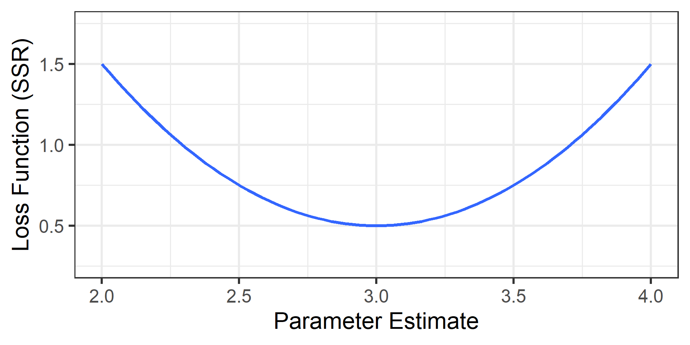
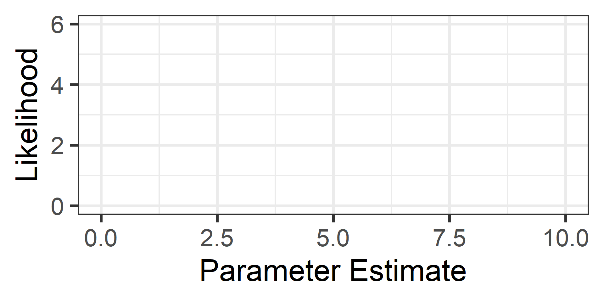
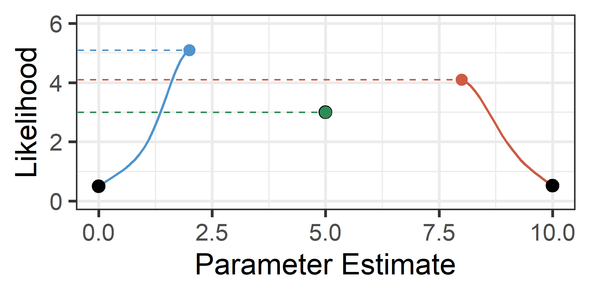
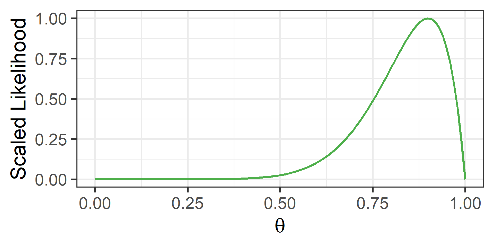
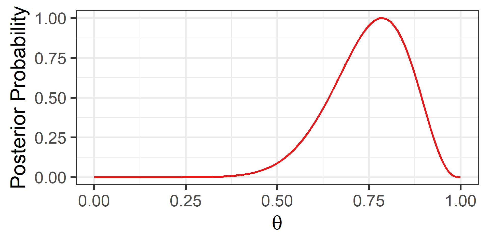
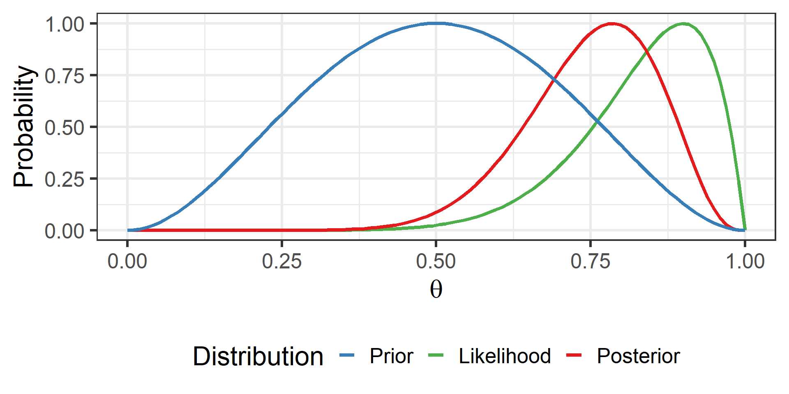

Multilevel Modeling
Estimation Strategies
Spring 2026 | CLAS | PSYC 894
Jeffrey M. Girard | Lecture 04a

Roadmap
- Ordinary Least Squares
- Goals, Estimates, Intuition
- Maximum Likelihood
- Goals, Versions, Optimizers
- Bayesian Overview
- Basics, Priors, MCMC
Ordinary Least Squares
Goals and Objectives
- We want to estimate population parameters from a sample
- Select a “loss function” that measures estimation quality
- Find the parameter values that optimize this function
lm()uses Ordinary Least Squares (OLS) estimation- The loss function is the sum of squared residuals (SSR)
- We can simply optimize this function using calculus
OLS Estimates
Imagine calculating SSR for every possible \(\beta\) estimate
Plot the estimated values on \(x\) and their SSR values on \(y\)
SSR will be smallest at the true population parameter value
SSR will increase as estimates move away from this value
The plotted loss function will appear quadratic (like a U)
The OLS estimates will be at the bottom of that curve
This is when the derivative of the loss function equals zero
Loss Function
Here is our imagined plot when the true value is \(\beta=3.0\)
Derivative at Zero
The derivative is the slope of the tangent line

The OLS Solution
- Because OLS makes simple assumptions, we don’t need to guess.
- Calculus gives us a direct “closed-form” solution.
In Simple Regression: \[Slope = \frac{\text{Covariance}(X,Y)}{\text{Variance}(X)}\]
- This is essentially a “Variance-Weighted Correlation.”
- It tells us how much \(Y\) changes as \(X\) changes, relative to the spread of \(X\).
Generalizing OLS
- Multiple Regression
- The logic is exactly the same, but we use Matrix Algebra.
- It accounts for the covariance between all predictors simultaneously.
- The Takeaway
- OLS is fast and precise because we can solve it directly.
- We jump straight to the bottom of the “U” curve.
- … But only if the assumptions are met.
Maximum Likelihood
Recap: Why not OLS?
- Recall from last lecture:
- OLS assumes errors are independent.
- Clustered data (students in schools) violates this.
- The Consequence:
- OLS thinks we have more unique information than we do.
- Standard Errors are underestimated.
- Result: Drastically inflated Type I Error (False Positives).
Goals
- Because of this, OLS cannot be used for multilevel models
- Maximum Likelihood Estimation (MLE) is often used
- The Concept: We want to maximize the Likelihood, which asks: “If the population parameter were \(X\), how probable would our data be?”
- The Goal: Find the parameter values that make our observed data most probable (i.e., the top of the Likelihood hill).
- Computational Note:
- To make the math easier, software actually minimizes a transformation of the Likelihood: the Negative Log-Likelihood (\(-LL\))
- Intuition: We flip the “Likelihood Hill” upside down into a “Loss Valley” so the computer can minimize “badness” (just like in OLS).
MLE Versions
- Full Maximum Likelihood (ML) includes both the regression
coefficients and the variance components in the likelihood- ✅ Can compare models with different (fixed) predictors
- ❌ Variance component estimates may be too small (biased)
- Restricted Maximum Likelihood (REML) only includes the
variance components in the likelihood and then estimates the
regression coefficients in a separate step- ✅ Corrects the bias in the variance components
- ❌ Can’t compare models with different (fixed) predictors
Practical Advice: ML vs REML
- When reporting parameters:
- Use REML (default in most software)
- It gives less biased estimates of variance/SD
- When comparing models:
- If models differ in (fixed) predictors, use ML
- If models differ only in cluster structure, use REML
How to optimize it?
- Unlike OLS, there is no closed-form solution
- We cannot simply solve for the answer with algebra
- (The math is too complex to do in one step)
- Instead, we must use an iterative search
- We try a value, check the fit, and improve it
- We repeat this loop until the answer stops changing
- We often use local derivatives to guide the search
- Gradient: Which direction is steepest? (The Compass)
- Hessian: How curved is the hill? (The Map)
- Note: If the terrain is flat or ambiguous, the search may fail
Hill Climbing Analogy
- I am blindfolded in a thick fog and dropped on a hill
- I can win a great prize if I find the summit without looking
- Luckily, I have a device that announces my elevation
- I step in a random direction and then check my elevation
- If it increased, then I step again in that direction
- If it decreased, I step back and try another direction
- I repeat (d) until stepping in any direction decreases my elevation
- I am now at a peak of the hill (and hopefully the summit)
Hill Climbing Challenges
What if I walk for days and never reach a peak of the hill?
What if I get stuck on a local peak that isn’t the summit?
Potential Solutions
- I can map out the curvature around me (before taking each step)
- This may prevent me from committing to unfruitful paths
- I can partner with other hill climbers (and share the prize money)
- With different starting places, some may avoid local peaks
- With different step sizes, some may find additional paths
Optimization as Hill Climbing
- Select a random or “best guess” starting value1
- Estimate the likelihood of the current value2
- Detemine whether to increase or decrease the value3
- Update the current value by some amount (step size)4
- Repeat steps 2-4 until the change in likelihood is small5
Visual Example
We start with no knowledge of the likelihood function
Visual Example 2
We can choose three starting values at \(x=\{0,5,10\}\)

Visual Example 2
Now each climbs until convergence and the highest wins
Our maximum likelihood estimate would thus be \(x \approx 2\)
Visual Example 3
The unknown-to-us likelihood function is plotted in black

Optimization Algorithms
- Quadratic Approximation (lme4)
- Does not require derivative information (Gradient/Hessian)
- ✅ High speed, good when derivatives are difficult to compute
- ❌ Struggles with complex models, many warnings
- Quasi-Newton (glmmTMB)
- Uses derivative information (Gradient/Hessian)
- ✅ Manages parameters boundaries, fewer warnings
- ❌ Sensitive to starting values, slower speed
- Expectation Maximization (EM) has benefits for missing data
Bayesian Alternative
Overview
- MLE only uses the Likelihood for estimation
- It relies entirely on the observed sample
- It is “objective” and purely data-driven
- But it can be misled by small samples
- Bayesian estimation also uses the Likelihood
- But it combines it with other information
- Specifically, it relies on the user to input a prior
Bayes’ Theorem
- Prior = Information from Before Seeing Data
- Likelihood = Information from Observed Sample
- Posterior = Updated or Combined Information
\[ \text{Posterior} \propto \frac{\text{Likelihood}\cdot\text{Prior}}{\text{Marginal Likelihood}} \\ \]
\[ P(\theta|\text{Data}) \propto \frac{P(\text{Data}|\theta)P(\theta)}{P(\text{Data})} \]
Visual Depiction: Prior

Visual Depiction: Likelihood
Visual Depiction: Posterior
Comparison
Informative Priors
- An informative prior: specific values are more likely
- This can stabilize estimates in small samples
- But can be misleading and needs to be justified

Noninformative Priors
- A noninformative prior: all values are equally likely
- This can yield estimates very similar to MLE
- But some values are really implausible…

Weakly Informative Priors
- A weakly informative prior: plausible values are more likely
- We can discourage the model from implausible values
- We can conservatively center it on the null value

Approximating the Posterior
- Bayes’ theorem requires estimating the Marginal Likelihood
- In most situations, solving for this would be impossible
- Instead, we usually try to approximate the posterior
- We use Markov Chain Monte Carlo (MCMC) to do so
- This is an iterative procedure that can be intensive
- It provides a distribution of samples from the posterior
Estimation Comparisons
- Maximum Likelihood Estimation
- Goal: Find the single best Frequentist estimate (the peak)
- Method: “Climb the hill” using local derivatives
- Pros/Cons: Faster, but gets stuck on flat or complex terrain
- Markov Chain Monte Carlo
- Goal: Approximate the entire Bayesian posterior (the shape)
- Method: “Explore the mountain” using random sampling
- Pros/Cons: Slower, but more robust (less likely to fail)
Using the Posterior
1. Point Estimate
We report the center of the posterior distribution (e.g., the Median) as our single “best guess” for the parameter.
2. Uncertainty Interval
We report the interval containing the inner 95% of the posterior density (e.g., the HDI) to show our uncertainty.